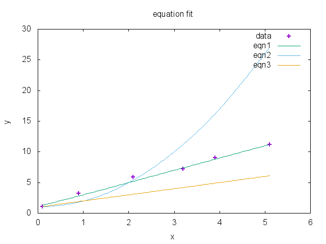
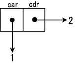

Language for 2016 - Common Lisp
Table of Contents
- Introduction
- An Overview of Common Lisp Syntax
- Example 1 - Sum of Square Errors
- Core functions
- Data Structures
- TODO Creating Variables
- TODO Functions
- TODO Example 2
- TODO Declare, declaim, proclaim
- TODO Control Operations
- TODO Error Handling
- TODO Lazyiness
- TODO Streams
- TODO Macro Dispatching Characters
- TODO Macros
- TODO Multimethods
- TODO CLOS
- TODO Packages
- TODO Standard Libraries
- TODO Important Libraries
- TODO Example 3
- TODO Working with GNU Emacs and Slime
- TODO Something about read eval
- TODO Something about lisp development workflow
Introduction
I have chosen common lisp as my language to learn in more depth for 2016 as I have dabbled with it over the past year or so, along with clojure, another very good lisp based language.
I chose common lisp as a language as I prefer the syntax over clojure and because I believe it should be able to produce more efficient code as well as being able to produce stand alone binary files without the dependence on the JVM that clojure has.
I have no specific plan as to how this learning will pan out, other than I intend to dive a bit deeper than I have done in the past.
The tools I use for this learning are SBCL and GNU Emacs with Slime. This is all running under OS-X El Capitan on a Macbook pro.
The complete source code for this article can be found here and the article formatted as PDF here. The org-mode file used to generate this web page and the lisp code can be found here.
Some books I have on lisp can be found here.
I have inter-dispersed larger examples through the code that hopefully build on the sections that have preceded.
An Overview of Common Lisp Syntax
Common lisp has a simple syntax for processing lists delimited by '(' and ')'. The lisp processes a list by applying the the first item in the list as an operator and the rest as operands. Lists can be nested:
1: ;; Comments can be added using a semi colon 2: (+ 3: (* 3 4) 4: (+ 2 3))
This code applies operand '+' to the result of applying operand '*' to 3 and 4, and the result of applying operand '+' to 2 and 3.
A list can be created as a just list of data, by using the 'quote' operand or by using a shortcut single quote, the following are both equivalent:
5: ;; The following lines are equivalent 6: (equal (quote (1 2 3 4)) 7: '(1 2 3 4)) 8: ;; => T
More details on collections can be found in Collections.
String are, like most languages, delimited with double quotes.
Backslashes are used as escape characters, much like other languages. However, the use of a vertical bar allows special characters to be used without escaping:
9: ;; The following items in the list are equivalent 10: (equal 'A\(B\) '|A(B)|) 11: ;; => T
A hash symbol is a macro symbol, known as the dispatching macro character. There are many of these, for example:
12: ;; #' - function abbreviation 13: ;; #\ - character object 14: ;; ,#+ - read-time conditional 15: ;; #c - complex number 16: ;; #( - vector
More details can be found in Macro Dispatching Characters.
A back quote can be used to allow a template to be used when generating code, with a comma used to evaluate a form and an '@' symbol used to splice a list into the template, for example:
17: (defparameter x '(a b c)) 18: ;; x 19: `(x) 20: ;; => (x) 21: `(,x) 22: ;; => ((a b c)) 23: `(,@x) 24: ;; => (a b c) 25: `(x ,x ,@x foo ,(cadr x) bar ,(cdr x) baz ,@(cdr x)) 26: ;; => (x (a b c) a b c foo b bar (b c) baz b c)
This is used extensively when writing macros. For more information on macros see Macros.
Colons are used in 2 situations. Firstly it can be used to indicate the package in which a symbol is defined:
27: ;; reset is a symbol in the network package 28: ;; (network:reset)
Packages are discussed in Packages.
It can also be used to denote a keyword, which is a symbol that always evaluates to itself and is constant. For example:
29: (eql ':foo :foo) 30: ;; => T
Keywords are interned in the package KEYWORD and are automatically exported from it:
31: (eql keyword:foo :foo) 32: ;; => T
Example 1 - Sum of Square Errors
An equation that is used in regression algorithms is the sum of the square of errors for a given dataset and function being fitted to the data.
Given a data set of size \(m\) with a single input variable \(x\) and a single output value \(y\) for each item in the data set and a function that is an attempt to fit a function to the values:
$$y = f(x)$$
Then an error can be calculated based on the sum of the square of the individual errors, giving an estimate of how well fitted the function is to the date:
$$E = \sum_{n=0}^m(f(x_n) - y_n)^2$$
Using lisp, we can write some code that takes a data set, computes the error based on several functions:
33: ;; First declare some data 34: ;; 35: (defparameter data '((0.1 . 1.1) 36: (0.9 . 3.2) 37: (2.1 . 5.9) 38: (3.2 . 7.2) 39: (3.9 . 9.0) 40: (5.1 . 11.2))) 41: 42: ;; then some equations 43: ;; 44: (defparameter equation-list 45: (list #'(lambda (x) (+ 1 (* 2 x))) 46: #'(lambda (x) (+ 1 (* x x))) 47: #'(lambda (x) (+ 1 x)))) 48: 49: ;; now create a function that applies a function 50: ;; to a set of input data 51: ;; 52: (defun apply-function (f d) 53: (map 'list #'(lambda (x) (funcall f (car x))) d)) 54: 55: ;; A function that returns the error as the difference 56: ;; between two values squared 57: ;; 58: (defun square-error (test-data calc-data) 59: (expt (- test-data calc-data) 2)) 60: 61: ;; A function that returns the sum of square errors 62: ;; of a collection of data and the results 63: ;; 64: (defun sum-square-error (f test-data) 65: (reduce #'+ 66: (map 'list 67: #'(lambda (test calc) 68: (square-error (cdr test) calc)) 69: test-data (apply-function f test-data)))) 70: 71: ;; Now we can run the sum of square errors across all equations 72: ;; 73: (map 'list #'(lambda (eq) (sum-square-error eq data)) 74: equation-list)
| 0.7400005 | 320.44208 | 61.350002 |
The data is defined as a set of cons cells with the car equal to an x value and the cdr equal to a y value. This is the test data that will be used to check the equations. It uses defparameter, but could equally be defined inline at Line 73.
The equations are defined as a list of lambda functions modeling the following equations for fitting to the data:
\(y=2x+1\)
\(y=x^2+1\)
\(y=x+1\)
Again, these could have been defined inline at the point of use.
The apply-function function takes a function as an argument and a collection of data as an alist and executes the function taking the car of each item in the alist as the x value to calculate the y value.
The square-error function takes a single test data y value and a single calculated value and calculates the square of the error.
The sum-square-error function takes a function f and applies the square-error function to each item in the test data and the corresponding calculated output as calculated by the function f.
The output is generated by applying the sum-square-error function to each equation using the test data.
It can clearly be seen from both the results of the sum of square errors and the input data that eqn1 is the best fit.
To confirm this we can plot the data:
| x | data | eqn1 | eqn2 | eqn3 |
|---|---|---|---|---|
| 0.1 | 1.1 | 1.3 | 1.01 | 1.1 |
| 0.9 | 3.2 | 2.8 | 1.81 | 1.9 |
| 2.1 | 5.9 | 5.2 | 5.41 | 3.1 |
| 3.2 | 7.2 | 7.4 | 11.24 | 4.2 |
| 3.9 | 9.0 | 8.8 | 16.21 | 4.9 |
| 5.1 | 11.2 | 11.2 | 27.01 | 6.1 |
using this gnuplot script:
set terminal png nocrop enhanced size 400,400 set key left box linestyle -1 set xlabel 'x' set ylabel 'y' set title 'equation fit' plot data u 1:2 w p lw 2 title 'data', \ data u 1:3 smooth csplines lw 1 title 'eqn1', \ data u 1:4 smooth csplines lw 1 title 'eqn2', \ data u 1:5 smooth csplines lw 1 title 'eqn3'

Core functions
- cons
cons is used to construct lists, it puts a new element at the end of the list, or can be used for creating a pair:
75: (cons 1 3) 76: ;; => (1 . 3) 77: (cons 3 nil) 78: ;; => (3) 79: (cons 5 '(1 2 3 4)) 80: ;; => (5 1 2 3 4)
- car
Given a list car retrieves the first item in a list:
81: (car '(1 2 3 4)) 82: ;; => 1
- cdr
Given a list cdr retrieves the remaining list after the first element
83: (cdr '(1 2 3 4)) 84: ;; => (2 3 4)
- cadr / cddr etc
These can be nested to various levels for example:
85: (cadr '(1 2 3 5)) 86: ;; => 2 87: (cddr '(1 2 3 4)) 88: ;; => (3 4)
- lambda
lambda is used to create a function special form involving a lambda expression. The expression takes a lambda list and a form and returns a function:
89: (lambda (x) (+ 1 x)) 90: ;; => #<FUNCTION (LAMBDA (X)) {10035B665B}>
- funcall
Funcall is used to call a function, which can be created with a lambda. However it becomes more useful when passing lambda expressions or functions as arguments (a little convoluted):
91: (funcall (lambda (x) (+ 1 x)) 3) 92: ;; => 4 93: 94: (defun do-something (x a) 95: (funcall x a)) 96: (do-something (lambda (x) (+ 1 x)) 2) 97: ;; => 3
- function
With the function function we can return a function from a function! This can be used to create a form of partial functions:
98: (defun multiplier (n) 99: (function (lambda (x) (* x n)))) 100: 101: (funcall (multiplier 3) 4) 102: ;; => 12 103: 104: (defun doubler (n) 105: (funcall (multiplier 2) n)) 106: 107: (doubler 10) 108: ;; => 20
- apply
The apply function is very similar to funcall, except it takes a list as an argument. This means that it can be used when the number of arguments is unknown at compile time.
109: (apply #'+ 100 '(4 5 6 7)) 110: ;; => 122 111: (defun add-to-ten (&rest args) 112: (apply #'+ 10 args)) 113: (add-to-ten 1 2 3 4 5) 114: ;; => 25
- read
The read function reads a single s-expression, skipping whitespace and comments and returns the lisp object denoted by the s-expression.
115: ;; given a file code.lisp containing 116: ;; 117: ;; (1 2 3) 118: ;; 456 119: ;; "a string" ; this is a comment 120: ;; ((a b) 121: ;; (c d)) 122: ;; 123: (defparameter *s* (open "code.lisp")) 124: ;; => *S* 125: (read *s*) 126: ;; => (1 2 3) 127: (read *s*) 128: ;; => 456 129: (read *s*) 130: ;; => "a string" 131: (read *s*) 132: ;; ((A B) (C D)) 133: (close *s*) 134: ;; => T
- eval
The eval function just evaluates a lisp expression. It is used in combination with read to execute lisp expressions:
135: (eval (+ 1 2)) 136: ;; => 3 137: ;; given a file code.lisp with a line 138: ;; (+ 1 2) 139: (defparameter *s* (open "code.lisp")) 140: (eval (read *s*)) 141: ;; => 3
- print
The print function prints the representation of a lisp object.
142: (print 2) 143: ;; 2 144: ;; => 2 145: (print (eval (+ 1 2))) 146: ;; 3 147: ;; => 3
- cond
The primary conditional statement in lisp is the cond function:
148: (defun get-type-name (a) 149: (cond ((null a) "null") 150: ((atom a) "atom") 151: ((listp a) "list") 152: (t "unknown"))) 153: (get-type-name nil) 154: ;; => "null" 155: (get-type-name 1) 156: ;; => "atom" 157: (get-type-name '(1)) 158: ;; => "list"
- quote
The quote function is described above.
- atom
The atom function is outlined below.
- null
The null function determines if a symbol is nil:
159: (null nil) 160: ;; => T 161: (null 1) 162: ;; => nil 163: (null '()) 164: ;; => T
- set, setf and setq
set is the original lisp function. setf is a shorthand function meaning set field and setq a shorthand function meaning set quote. One can think of set as setting value of symbols and setf as setting the value of variables. setf is a macro allowing various setting of things.
165: ;; The following are all equivalent 166: (set (quote *foo*) 42) 167: (setf (symbol-value '*foo*) 42) 168: (set '*foo* 42) 169: (setq *foo* 42) 170: ;; assigning to data structure 171: (setf (car x) 42) 172: ;; some more examples 173: (set ls '(1 2 3 4)) ;; ERROR ls has no value 174: (set 'ls '(1 2 3 4)) ;; OK 175: (setq ls '(1 2 3 4)) ;; OK 176: (setf ls '(1 2 3 4)) ;; OK 177: (setf (car ls) 10) ;; ls -> '(10 2 3 4)
- defvar and defparameter
defvar and defparameter are very similar, both bind a value to a name. the difference is that defvar only binds the value if it is not already bound. However, the value can still be changed with setq:
178: (defvar *s* 2) 179: ;; => *S* 180: *s* 181: ;; => 2 182: (defvar *s* 3) 183: *s* 184: ;; => 2 185: (setq *s* 3) 186: *s* 187: ;; => 3 188: (defparameter *t* 2) 189: *t* 190: ;; => 2 191: (defparameter *t* 3) 192: *t* 193: ;; =>3
- defconstant
defconstant is similar to defparameter and defvar, except the value cannot be changed.
- defun
defun defines a function that can be called from other parts of code. They are the primary abstraction mechanism in lisp and are described below.
- defmacro
defmacro is used to define macros that are evaluated during compilation, they are discussed below.
- equality predicates
There are several equality operators in lisp that perform different functions:
(eq x y) is true if and only if x and y are identical objects.
(eql x y) is true if (eq x y) or x and y are numbers of the same type and have the same value, or are character objects that represent the same character.
(equal x y) is true if x and y are structurally similar (isomorphic). It is often the case that x and y will have the same printed representation.
(equalp x y) is true if (equal x y) is true or for numbers they have the same value even if they are different types or for characters that are equal but different case. For collections, (equalp x y) is true if equalp is true for every element in the collection.
Data Structures
Atoms
Atoms are things that are not cons cells, and can be tested using the atom predicate:
194: (atom 1) 195: ;; => T 196: (atom :test) 197: ;; => T 198: (atom nil) 199: ;; => T 200: (atom '()) 201: ;; => T
However, they are not things that cannot be broken down any further:
202: (atom "text") 203: ;; => T 204: (atom #(1 2 3)) 205: ;; => T
Symbols are atoms as well:
206: (defun test-atomicity (x) (atom x)) 207: (atom 'test-atomicity) 208: ;; => T
And lambda expressions:
209: (atom (lambda (x) (atom x))) 210: ;; => T
Examples of some things that are not atoms:
211: (atom '(1 . 3)) 212: ;; => NIL 213: (atom '(1 2 3)) 214: ;; => NIL 215: (atom (cdr '(1 2 3))) 216: ;; => NIL
Conversion between types using coerce
217: (coerce '(a b c) 'vector) => #(A B C) 218: (coerce 'a 'character) => #\A 219: (coerce 4.56 'complex) => #C(4.56 0.0) 220: (coerce 4.5s0 'complex) => #C(4.5s0 0.0s0) 221: (coerce 7/2 'complex) => 7/2 222: (coerce 0 'short-float) => 0.0s0 223: (coerce 3.5L0 'float) => 3.5L0 224: (coerce 7/2 'float) => 3.5 225: (coerce (cons 1 2) t) => (1 . 2)
Sequences
Sequences are ordered lists of elements and can be manipulated by a variety of standard sequence functions. A sequence is either a vector or a list. Vectors are one dimensional arrays and Lists are linked lists made up of cons cells and are discussed here.
Arrays and Vectors
- simple array
Arrays are simple multi dimensional lists of fixed size with elements that are arranged sequentially, rather than as a linked list in the case of lisp lists:
226: ;; creates a 3 dimensional array with 10 elements in each dimensional 227: (defparameter *array* (make-array '(10 10 10))) 228: ;; creates an array with all elements initialised to 23 229: (defparameter *23-array* (make-array '(10 10) :initial-element 23)) 230: ;; initialise with content 231: (defparameter *fib* (make-array '(5) :initial-contents '(1 2 3 5 8))) 232: ;; set a value of an array element 233: (setf (aref *23-array* 5 5) 7) 234: ;; an array with room for 2 elements, resizeable but empty 235: (defparameter *resizeable* (make-array '(2) :fill-pointer 0 :adjustable t)) 236: (vector-push 'a *resizeable*) 237: (vector-push 'b *resizeable*) 238: (vector-push-extend 'c *resizeable*) 239: *resizeable* 240: ;; => #(A B C) 241: (vector-pop *resizeable*) 242: *resizeable* 243: ;; => #(A B) 244: (adjust-array *resizeable* '(2))
- bit vector
Bit vector are efficient containers for bits that can be manipulated with bitwise operations:
245: (bit-and #*1101000101000101 #*0100100010100101) 246: ;; = > #*0100000000000101
Strings
A string is a specialized vector with elements of type character. All the sequence functions below can be applied to strings.
- Manipulating the case of a string
The case of strings can be manipulated, either as a whole string or based on a start and end index:
247: (string-upcase "test") 248: ;; => "TEST" 249: (string-downcase "TEST") 250: 251: ;; => "test" 252: (string-capitalize "sOmE stRIng") 253: ;; => "Some String" 254: 255: ;; all the string functions take a start and end key paramater 256: (string-upcase "test" :start 1 :end 3) 257: ;; => "tESt" 258: 259: (setq data "test") 260: 261: (nstring-upcase (da a :start 2 :end 4) 262: data 263: ;; => "teST"
- Trimming strings
Strings can be trimmed based on a list of characters, either supplied as another string, or as an explicit list of characters:
264: (string-trim " " " ddd ") 265: ;; => "ddd" 266: (string-trim "." "...ddd ") 267: ;; => "ddd " 268: (string-left-trim "." "...ddd...") 269: ;; => "ddd..." 270: (string-right-trim "." "..ddd...") 271: ;; => "...ddd" 272: (string-left-trim ".ab" "ba...ddd...") 273: ;; => "ddd..." 274: (string-right-trim '(#\Space #\e #\t) " trim me ") 275: ;; " trim m"
- Converting to and from symbols
symbols can be converted to strings and vice versa:
276: (symbol-name 'test) 277: ;; => "TEST" 278: (symbol-name 'Test) 279: ;; => "TEST" 280: (symbol-name '|Test|) 281: ;; => "Test" 282: 283: (intern "TEST") 284: ;; => TEST 285: (intern "test") 286: ;; => |test| 287: 288: ;; a use of this could be to execute a command based on a string 289: ;; combined with a funcall: 290: (funcall (intern "CONS") 1 2) 291: ;; => (1 . 2)
- Converting to and from strings
292: ;; parsing integers from strins 293: ;; 294: (parse-integer "123") 295: ;; => 123, 3 296: (parse-integer "123" :start 1 :radix 5) 297: ;; => 13, 3 298: (parse-integer "no-integer" :junk-allowed t) 299: ;; => NIL, 0 300: 301: ;; parse the printed representation of an object 302: ;; 303: (read-from-string " 1 3 5" t nil :start 2) 304: ;; => 3, 5 305: (read-from-string "(a b c)") 306: ;; => (A B C), 7 307: 308: ;; combine with eval: 309: ;; 310: (eval (read-from-string "(+ 1 2)")) 311: ;; => 3 312: ;; and combine with print 313: (print (eval (read-from-string "(+ 1 2)"))) 314: 315: ;; creating a printed representation of an object 316: ;; 317: (write-to-string '(+ 1 2)) 318: ;; => "(+ 1 2)" 319: (defmacro my-inc (x) `(+ 1 ,x)) 320: (write-to-string (my-inc 2)) 321: ;; => "3" 322: (write-to-string '(my-inc 2)) 323: ;; => "(MY-INC 2)" 324: (write-to-string (macroexpand '(my-inc 2))) 325: ;; => "(+ 1 2)"
- Comparing strings
326: (string= "test" "test") 327: ;; => T 328: (string= "test" "Test") 329: ;; => NIL 330: (string-equal "test" "Test") 331: ;; => T 332: (string= "John C" "John D" :start1 0 :end1 4 :start2 0 :end2 4) 333: ;; => T 334: (string/= "test" "test") 335: ;; => NIL 336: (string/= "test" "Test") 337: ;; => T 338: (string-not-equal "test" "Test") 339: ;; => NIL 340: 341: ;; also lexical greater than less than equivalents: 342: ;; 343: (string< "a" "ab") 344: ;; => 1 345: (string< "ab" "abc") 346: ;; => 2 347: (string-lessp "ab" "aBc") 348: ;; => 2 349: (string> "ab" "ab") 350: ;; => NIL 351: (string>= "ab" "ab") 352: ;; => 2
Lists
Cons cells are the basic data structure in lisp and provide a building block for lots of different structures. A basic cons cell can be constructed using cons:
353: (cons 1 2) 354: ;; => (1 . 2)
This creates a dotted pair:

When combined these cons cells can be used to create lists:
355: ;; A dotted list 356: (cons 1 (cons 2 (cons 3 4))) 357: ;; => (1 2 3 . 4) 358: ;; A proper list 359: (cons 1 (cons 2 (cons 3 (cons 4 nil)))) 360: ;; => (1 2 3 4)
Although using list is a simpler way of achieving the creation of lists:
361: (list 1 2 3 4) 362: ;; => (1 2 3 4)
The elements of these lists can then be accessed with car and cdr and various other functions of similar name:
363: (car '(1 2 3 4)) 364: ;; => 1 365: (cdr '(1 2 3 4)) 366: ;; (2 3 4) 367: (cadr '(1 2 3 4)) 368: ;; => 2 369: (cddr '(1 2 3 4)) 370: ;; => (3 4)
NEXT Manipulating Sequences
- concatenate
- copy-seq
- count
- count-if
- count-if-not
- delete
- delete-duplicates
- delete-if
- delete-if-not
- elt
- every
- fill
- find
- find-if
- find-if-not
- length
- map
- mapcar
- map-into
- merge
- mismatch
- notany
- notevery
- nreverse
- nsubstitute
- nsubstitute-if
- nsubstitute-if-not
- pop
- position
- position-if
- position-if-not
- reduce
- remove
- remove-duplicates
- remove-if
- remove-if-not
- replace
- reverse
- search
- some
- sort
- stable-sort
- subseq
- substitute
- substitute-if
- substitute-if-not
TODO Hash Tables
TODO Trees
TODO Association Lists
TODO Property Lists
TODO Records
TODO Structures
TODO Classes
TODO Creating Variables
TODO Functions
currying / partial no side effects let / flet
TODO Example 2
TODO Decide on an example that uses the above.
TODO Declare, declaim, proclaim
TODO Control Operations
TODO Error Handling
Conditions and restarts http://www.gigamonkeys.com/book/beyond-exception-handling-conditions-and-restarts.html
TODO Lazyiness
TODO Streams
TODO Macro Dispatching Characters
set-macro-character symbol macros
TODO Macros
TODO Multimethods
TODO Standard Libraries
TODO Important Libraries
TODO Example 3
Some kind of web service?